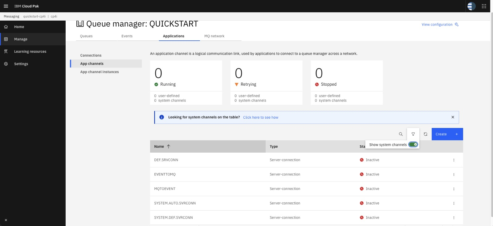

Overview
Table of Contents
- 1. Introduction
- 2. Event Streams Setup
- 3. Create Kafka assets in toolkit
- 5. Test our Deploy assets
1. Introduction
React to events in real time to deliver responsive and personalized experiences for applications and customer experience. Built on open source Apache Kafka, IBM Event Streams is an event-streaming platform that helps you build smart applications that can react to events as they happen.
This lab we will configure and deploy an API Integration Flow developed with ACE Toolkit that uses the Kafka Nodes to connect to an Event Streams cluster to produce events using the latest version of the ACE.
We will also configure and deploy an Integration Flow developed with ACE Toolkit that uses the Kafka Node to connect to an Event Streams cluster to consume those events and put them onto an MQ queue as wells as write to log file.
2. Setup Consumer Endpoints, Kafka Topic and MQ Queue
1. First we will login to your assigned cluster URL that you were assigned. We will create the kafka topic and MQ Queue we will be using.
1. You will now be on your home page and in the upper left it will show your login name and you can always click on IBM Automation to get to this home page.
- For this lab we will be using App Connect Dashboard, under Integration Messaging we will use MQ, and under Event Streaming we will use event-stream for our Kafka broker.

2. You can right click on each of these capabilities and open them in a new tab.
You will then have a tab open for each of them to help save time.

2.1 Create the Kafka topic
Now fill in the fields. We will use the SCRAM credentials and certificates as per Create Connection to shared Kafka cluster.
Once you complete this or if you have already completed you will have the following details saved in a notepad and the certs should be in your download directory.
a. The bootstrap URL of the cluster
b. The SCRAM username
c. The SCRAM password
d. The PEM certificate (used in the Designer flows).
e. The PKCS12 password (used in the Toolkit flows).
f. The PKCS12 certificate (used in the Toolkit flows).
1. Now go to the tab for event-stream or you can click on the link from the home page and this will take you to the IBM Event Streams home page.

2. Now we will create our topic. Click on the Create a topic tile.

3. Now enter the name of your topic. Since this is a shared Kafka broker, use your userid/name/unique-idetifier as part of the topic name. In this example, we created the topic name is chopper1.toolkit-topic. Click Next.
Note: Make sure you use your userid/name/unique-idetifier without adding additional characters since this is tied to the connection details in the Pre-lab section.

4. Leave the partitions at 1 and click Next.

5. Since this is for a lab, change the Message retention to A Week and click Next. Note: If we wanted to retain message longer we could change this to meet those needs.

6. For the Replicas, we will change the Minimum in-sync replicas to 1 and select Replication factor:1. Note: Make sure that the radial button next to Replication factor:1 is selected before clicking Create topic.

7. Now you will be back on the Topics screen. You may see other users topics in the list but make sure you see your topic. In this example, we just created the ex: chopper1.toolkit-topic topic.
On the left menu click on the home page.

8. We are now back on the Event Steams home page. We need to make we have the PKCS12 cert downloaded to our VDI since this is where we need to have this to setup our configuration.
If you already download the PKCS12 cert for the Event streams then skip to step 11.
Otherwise click on the Connect to the cluster tile.

9. Now we will click on the PKCS12 Download certificate.

10. We will sve the es-cert.p12 file and also we need to save the password.

11. Due to the version of Java in ACE we will need to convert the PKCS12 to a JKS.
We will do this by running the following command.
keytool -importkeystore -srckeystore es-cert.p12 -srcstoretype PKCS12 -destkeystore es-cert.jks -deststoretype JKS -srcstorepass XXXXXXX -deststorepass XXXXXX -noprompt
We will first open a terminal window. Next cd to the Downloads directory. If you do a ls es-cert* command you should see the es-demo.p12 cert you just download. The only thing you need to change in this example is replace the XXXXXX with the password you saved for the PKCS12 cert. Once done do a list again and you will now see the es-cert.jks file.

2.2 Create MQ Queue for the consumer
1.Now go to the tab for MQ Console
Or you can click on the link from the home page and this will take you to the IBM MQ Console home page.

2. Now click on your Queue Manger tile.

3. We will be creating a new local Queue for this lab. Click on Create

4. Click on the local Queue tile.

5. Now enter the Queue name. You can use your userid/name/unique-idetifier as part of the Queue Name to make it unique as its a shared cluster. In the example we used TOOLKIT.KAFKA.CONSUMER then click Create.

6. We now have your Queue defined.

2.3 Configure Default Channel Security
There are different layers of authorization and authentication configured on the Channel access. To simplify the exercise, we will proceed to disable to Channel security authentication and authorization using the script mq_ace_lab.mqsc . Below steps will assist to disable.
Copy Login Commands to login to oc client.

Login to Openshift cluster using oc client.

oc login --token=sha256~xxxxxx-xxxxxx-g --server=https://servername:30273
run below command to see all your projects.
oc projects
Run below command to switch to your project.
oc project cp4i
Run below command to see the pod name of the mq queue manager.
oc get pods | grep -i mq
Note the MQ Queue Manager POD Name. eg. quickstart-cp4i-ibm-mq-0
Change Directory to the location of your mqsc file. Use the following command to upload mqsc file to the MQ pod. QUICKSTART is queue manager name.
oc exec -it quickstart-cp4i-queue-ibm-mq-0(this is your pod’s name) runmqsc QUICKSTART(QMGR-Name) < mq_ace_lab.mqsc
This script performs:
Disable Chlauth security
Disable clientauth security
Disable user security on MQ objects level
The above command should succeed with below lines in the end.
94 MQSC commands read.
No commands have a syntax error.
All valid MQSC commands were processed.
Note the default channels details. Go to the Applications Tab for the Queue Manager that you created.
Click on App Channels link in the left pane. Click on the Filter and Select Show System Channels.

You should be able to see the System Channels. Note the default channel to be used for MQ Communication. eg. SYSTEM.DEF.SVRCONN

Click on the IBM Automation on the upper left to go back to the homepage.
3. Create Kafka assets in toolkit
In this lab we will use a simple project that exposes an API to POST information into a Kafka topic. In addition we will create a consumer project that will subscribe to our topic and consume the messages that our test API POST to the Kafka topic.
3.1 Create Kafka API test Producer in toolkit
In this section, we will use App Connect Toolkit to create a simple API that will produce messages and publish to our topic. We have a Project Interchange File provided that you will configure to use your user info for accessing the shared Kafka Broker in our lab cluster.
- Now download the KafkaProducerAPI-Template-PI.zip Click here and save the zip file to your device.
1. First we will start the ACE toolkit in our device. Double click on the Terminal icon on the desktop to open a terminal window. This will land you in the home directory.
Enter the following command to launch the ACE toolkit kit ace toolkit.
You will be presented with a window to select your workspace. Enter the workspace name /home/student/IBM/ACET12/workspace and click launch.
Note: If you don't have the ACE client, refer to install client tools.

2. If this is the first time using this workspace you will see the following screen and can just click to close the page.

3. The Eclipse based Integration Toolkit will open:

A) The Application Development window (A) is where your Applications, REST APIs, etc. will be shown in your workspace
B) Window (B) is where resources that you open (for example message flows) will be shown.
C) Window (C) is where properties of resources that you highlight in window (B) can be viewed
D) The Integration Explorer Window (D) is where you can view and manage deployed assets (for example Applications and Message flows). Note assets are deployed to Integration Servers that are optionally managed by an Integration Node. When they are managed by an integration node the integration servers will appear “under” an integration node in this view. When not managed by an integration node they will be found under the “Integration Servers” view in this window.
4. Now we will import this Project Interchange file into our Toolkit. Right click in the Application Development pane and select Import

5. The Import window will show and select the Project Interchange and click Next

6. When you downloaded the Project Interchange file KafkaProducerAPI-Template-PI.zip, it should be in the Download directory. Click on the Download in the left menu and you will see your PI file. Select the API Template and click Open

7. You will now see the Content of this PI file. Make sure both the KafkaProducerAPI and es-policy-project are checked and click Finished

8. You will now see the project in the Application Development on the left sdie. Open it can go to the Subflows folder and double click on the postContacts.subflow and you will see the flow open.
Review the complete flow. Click on the KafkaProducer in the flow.In the Properties tab, you will make your updates to this flow. In the Basic Tab, Replace the Topic name as per your unique userid/name/unique identifier. You can enter your unique userid/name/unique identifier for the Client ID to identify the client. You can enter anything for the Bootstrap servers here as the address will be picked up from Policy. Review all other properties tab. Make sure you have the correct Policy Name configured under the policy tab.
Note Enter CTRL-S to save your updates.

9. Now we will open the Event Stream Policy where we will configure the connection info to the Kafka broker. The only thing you may need to change is the Bootstrap Server address for your Kafka Broker. There are few important things to note here as documented in table below.
| Property | Description / Value |
|---|---|
| Type | Kafka |
| Bootstrap Server | Link when you generating SCRAM credential |
| Security protocol | SASL_SSL |
| SASL Mechanism | SCRAM-SHA-512 |
| SSL protocol | TLSv1.2 |
| Security identity (DSN) | ACE param contains SCRAM user and password. This exact name will be used later in integration server configuration properties in setdbparms.txt. You can keep it same |
| SASL config | org.apache.kafka.common.security.scram.ScramLoginModule required; |
| SSL trustore location | name and location of truststore in ACE container. It will be always inside /home/aceuser/truststores/ folder. The trust store file name depends on the name of the configuration property 'Truststore' for integration server. You can configure /home/aceuser/truststores/username-es-cert.jks here |
| SSL trustore type | JKS or PKCS12 (for now, we plan to use JKS) |
| SSL trustore security identity | ACE param contain trustore password. This exact name will be used later in integration server configuration properties in setdbparms.txt. You can keep it same |
| Enable SSL certificate hostname checking | true |

10. Make sure to save your updates. If you click on the postContacts.subflow you will see there is an '*' that means it isn't saved. You can do a CTRL-S to save. Do the same for the es policy.

3.2 Create Bar file to deploy our Producer flow
1. Now we will create the BAR file to deploy our flow. Navigate to the File menu and select New and then BAR file

2. In the pop-up window enter the name of the BAR file, i.e. kafka-api-producer and click Finish.

3. The BAR Editor is open. Select Applications, shared libraries, services, REST APIs, and Test Projects to display the right type of resources and then select your application, in this case KafkaProducerAPI. Finally click Build and Save... to create the BAR file.

4. You can dismiss the notification window reporting the result clicking OK.

5. We need to do a final step. We need to create a zip file from the Policy Project we created earlier in this section. First we will open the Files tools

6. Now goto the directory were we saved the Policy. This should be under the ACE Toolkit workspace. You will see the es_policy_project right click on it and select Compress

7. In the Compress Window make sure to select .zip for the format and the Location will be Desktop. Click Create

3.3 Create Kafka Consumer in toolkit
In this section, we will use App Connect Toolkit to create a consumer flow that will consumer the messages produced by our API producer from our topic. We have a Project Interchange File provided that you will configure to use your user info for accessing the shared Kafka Broker in our lab cluster.
- Now download the KafkaConsumerTemplatePI.zip Click here and save the zip file to your VDI.
1. Now we will import this Project Interchange file into our Toolkit. Right click in the Application Development pane and select Import
2. The Import window will show and select the Project Interchange and click Next
3. When you downloaded the Project Interchange file - KafkaConsumerTemplatePI.zip, it should be in the Download directory. Click on the Download in the left menu and you will see your PI file. Select the Consumer Template and click Open

4. You will now see the Content of this PI file. Make sure both the Kafka Consumer App and MQ_Policy_Project are checked and click Finished

8. You will now see the project in the Application Development on the left sdie.
(1) Open the KafkaConsumer_App and go to the Flows folder and double click on the KafkaConsumer.msgflow and you will see the flow open.
(2) Open the MQ_Policy_Project -> Policy and double click on the dev_policy.xml and you will see the policy open.
(3) In the msgflow click on the KafkaConsumer and make sure the Properites tab is selected below.
(4) This is where you will make your updates to this flow.
(4a) - For the Topic name you will the exact topic name created by you. (4b) For the Consumer Group ID and the Client ID, enter the unique username/identifier that you used for topic naming.(5) Click on the node KAFKA.CONSUME.ACCOUNTS and under the basic tab, verify the queue name that you have created. Under the Policy Tab, review the MQ policy name to be used. You can leave all other options as default.
Note Enter CTL-S to save your updates.

9. Now we will update the MQ policy for the Consumer flow. Click on the dev.policyxml and you will see the Policy and the attributes. We have the populated and you only need to change the Queue manager Name and its Host name. Also review the default channel name here. eg. SYSTEM.DEF.SVRCONN
9a. For the host name, login to RedHat Openshift console, and under Networking -> Services, find the service name based on your MQ instance name. Click on it and you can see the MQ Service Host Name.


9b. Enter CTL-S to save your updates.

3.4 Create Bar file to deploy our Consumer flow
1. Now we will create the BAR file to deploy our flow. Navigate to the File menu and select New and then BAR file
2. In the pop-up window enter the name of the BAR file, i.e. kafka-consumer and click Finish.

3. The BAR Editor is open. Select Applications, shared libraries, services, REST APIs, and Test Projects to display the right type of resources and then select your application, in this case KafkaConsumer_App. Finally click Build and Save... to create the BAR file.

4. You can dismiss the notification window reporting the result clicking OK.

5. We need to do a final step. We need to create a zip file from the Policy Project we created earlier in this section. First we will open the Files tools
6. Now goto the directory were we saved the Policy. This should be under the ACE Toolkit workspace. You will see the es_policy_project right click on it and select Compress

7. In the Compress Window make sure to select .zip for the format and the Location will be Desktop. Click Create

Summary so far
So far now we have two bar files (kafka-api-producer.bar and kafka-consumer.bar) and two policy projects zip files (es_policy_project.zip and MQ_Policy_Project.zip).
4. Create Configuration for Deploying to the App Connect Dashboard
Now we will go to the App Connect Dashboard to import our BAR files we created and also create the needed configurations to deploy our solution to a Server.
1. You can go to the Cloud Pack home page and Click on Dashboard to get back to the main designer page where you will see your API running.

Or if you already have a tab open from earlier in the lab you can select that.

2. You should now be on the App Connect Dashboard homepage.
4.1 Deploy BAR file using ACE Dashboard
1. From the ACE Dashboard home page navigate to the BAR files section clicking the Document icon

2. On the BAR files section click Import BAR + button.

3. In the wizard click the hyperlink Drag and drop a BAR file or click to upload to upload the BAR file we created in the previous section.

4. Navigate to the folder where the BAR file was created (In the VDI it should be in /home/student/IBM/ACET12/workspace/BARfiles) and select the file and click Open.

5. To complete the process click Import.

6. After a moment the file will be displayed in the list of BAR files available with the status of Not deployed

7. Now we have uploaded our API Kafka BAR file and need to also upload the Consumer Kafka BAR file.
8. Repeat steps 1-6 to upload the consumer BAR we created. When complete you should have both being displayed in the list of BAR files available with the status of Not deployed

4.2 Create Configurations in ACE Dashboard
1. We will now go to the configuration section and created the needed configurations needed to deploy are BAR files. Click on the Wrench icon to navigate to the Configuration section. Once the screen is updated click on the Create configuration.

2. In the wizard click on the Type drop down box to select Truststore to upload the Event Streams certificate.

3. In the Import truststore click to import the certificate you download in the previous section and converted to a JKS (es-cert.jks).

4. This will fill in the name. You may update the name as per configured in the kafka policy project, eg. username-es-cert.jks see the trust store location here . You can then add a brief description if you want to. Finally click Create to add the TrustStore Configuration.

5. Now we will define the Configuration to store the credentials selecting the setdbparms.txt type from the drop down box.

6. In the next window enter the name of the configuration. You can use
| Resource Name | User | Password |
|---|---|---|
| truststore::truststorePass | dummy | <Password obtained when downloading the PKCS12 certificate> |
| kafka::aceflowsSecId | <This will be your id used to create SCRAM credentials.> | <Password obtained for your id when you created your SCRAM credentials to connect to Event Streams> |
Here is an example from when the lab was created:
truststore::truststorePass dummy CMOzxxfSYGMT
kafka::aceflowsSecId chopper1 hAUDJTO76Fx0
Finally click Create to add the setdbparm.txt Configuration.

7. Now we will create the Configuration for the Policy selecting the Policy project type from the drop down box. Enter the name of the policy i.e. <username>-es-demo-scram-policy , add a brief description if you want to, i.e. Policy to connect to Event Streams instance es-demo using SCRAM and finally click on hyper link Drag and drop a single file here or click to import to import the zip file we created in the previous section.

8. Navigate to the folder where you saved the zip file in the previous section, select the file and click Open.

9. Once the policy is imported click Create to add the Policy to the Configuration.

10. Now we will create the Configuration for the Policy selecting the Policy project type from the drop down box. Enter the name of the policy i.e. <username>-mq-policy , add a brief description if you want to, i.e. Policy to connect to QMgr and finally click on hyper link Drag and drop a single file here or click to import to import the zip file we created in the previous section.

11. Navigate to the folder where you saved the zip file in the previous section, select the file and click Open.

12. Once the policy is imported click Create to add the Policy to the Configuration.

13. Once done you should have 4 new configurations that will be used when deploying the bar files into Integration Servers in the next section.

4.3 Create Server in ACE Dashboard
1. Now navigate to the Dashboard section so we can Create servers for Integration Deloyment.

2.From the Dashboard screen click on the Deploy Integration + button.

3. This will start the deployment wizard. Select the *Quick start toolkit integration tile and then click the Next button.

4. In the next window click on the drop down box to select the BAR file kafka-api-producer we previously uploaded and then click Next.

5. In the next window select the 3 configurations we created in the previous section and then click Next.
Note: Do not include the MQ policy. We will use that for the consumer flow

6. In the next page give your deployment a name, i.e <username>-kafka-api-producer-toolkit and click Advance settings.

7. Now scroll down to the Runtime container section and change the CPU request and Memory request. This will help to speed up the deployment for the lab. Then click Create

8. After a moment you will be taken back to the Dashboard page where you will see a new tile with your Integration Server deployment name in Pending state, similar to the picture shown below. We will now create Server to deploy the Consumer BAR file. Click Deploy Integration +

9. This will start the deployment wizard. Select the *Quick start toolkit integration tile and then click the Next button.
10. In the next window click on the drop down box to select the BAR file kafka-consumer we previously uploaded and then click Next.

11. In the next window select the 4 configurations we created in the previous section and then click Next.
Note: We will include the MQ policy for this flow since we are putting the messages to MQ Queue.

12. In the next page give your deployment a name, i.e <username>-kafka-consumer-toolkit and click Advance settings.

13. Now scroll down to the Runtime container section and change the CPU request and Memory request. This will help to speed up the deployment for the lab. Then click Create

14. You will be returned to the The App Connect Dashboard as it is deploying the Integration Server in the background creating the corresponding pod in the specified namespace of the Red Hat OpenShift Container Platform. This process can take more than a minute depending on your environment. Click the refresh button in your browser until you see the tile corresponding to your deployment in Ready state as shown below:

5 Test that everything is working as expected.
We will now test are flows but using the Kafka API to generate a Kafka message that our consumer flow will get and then write to a log file and put the message onto a MQ queue.
1. From the App Connect Dashboard screen make sure both your Integrations Servers are running and then click on the kafka api tile.

2. You will see the content which includes the API. Click on the API to open it.

3. In the KafkaProducerAPI click on the POST operation and select the the Try it.

4. Scroll down to the Body of the API and click on the Genrate to populate the body of the API. Then click Send
Note you can change the generated content to something more meaningful.

5. You will then see the response from the API and should include a 200 OK

6. Now go to the Event Stream Home page and select the Topics on the left hand menu.

7. You will then see several topics from others since this is a shared Kafka cluster. Select the topic you created for this lab.

8. Click on Messages and you will see a list of all messages published to this topic. Click on the current message and you will see the content to the right.

9. Now let's go to the MQ Console and select the Manager Tile for your QMgr.

10. You will see a list of Queues that you have for your QMgr. You should see the Queue you created for this lab eg. TOOLKIT.KAFKA.CONSUMER Every time you run the API Kafka Producers you will see the message depth increase.

11. Now let's go to the Red Hat Openshift Console. Select Workloads and select Pods to see all your running pods in your Project (cp4i). Find the kafka consumer pod (as per name of your integration server) and select that.

12. This is the Pod running your consumer container. Select the Terminal which will open a terminal into your container.
Enter the following commands to view the file your flow creates.
cd /tmp
ls -ls kafka-example*
cat kafka-example*

Summary
We have now completed the lab which shows how we can produce a message to be published to the kafka broker and then a consumer that will consume the messages for that topic and put to an MQ queue and write to a local file.